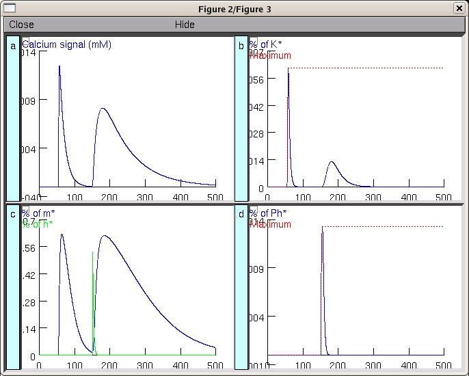

This is the readme for this package which reproduces figures 2 and 3 from: M. Badoual, Q. Zou, A.P. Davison, M. Rudolph, T. Bal, Y. Fregnac and A. Destexhe (2006) Biophysical and phenomenological models of multiple spike interactions in spike-timing dependent plasticity. Int J. Neural Syst. 16: 79-97 For more information, see http://cns.iaf.cnrs-gif.fr/abstracts/STDP2005.html How to run the model: --------------------- Simply auto-launch the model from ModelDB or download and extract the archive then under MSWIN ----- Run mknrndll, cd to the expanded directory and click on the make nrnmech.dll button. Under windows explorer double click on the mosinit.hoc file LINUX/UNIX ---------- Run nrnivmodl in the expanded archive folder. Then type nrngui mosinit.hoc MAC OS X -------- Drag and drop the expanded folder onto the mknrndll icon. Drag and drop the mosinit.hoc file onto the nrngui icon. Once the simulation has started ------------------------------- Select the button for the simulation that you would like to run. For example, selecting the Fig 2A button actually reproduces 2Aa, 2Ab, 2Ac and 2Ad:  These model files were supplied by Andrew Davison. 20111102 cadspine.mod updated to use derivimplicit. See http://www.neuron.yale.edu/phpBB/viewtopic.php?f=28&t=592 for more. 20120201 cad.mod was also updated to use derivimplicit see above link.